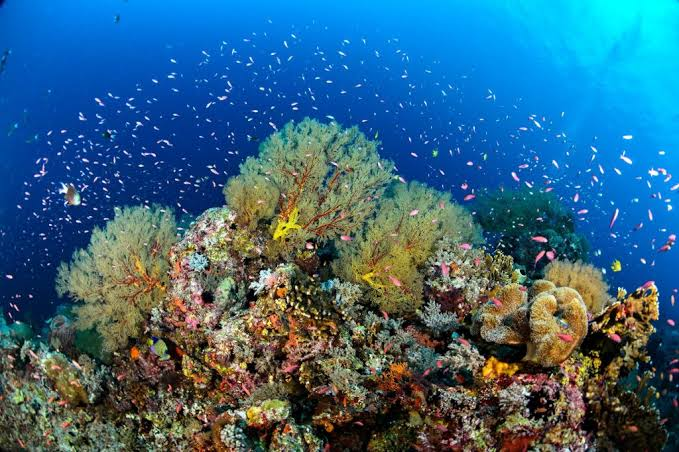

Park Profile • Sulu Sea
Tubbataha Reefs Natural Park
Tubbataha protects remarkable coral reefs and marine life. It is mainly visited by permitted liveaboard trips during its diving season; protect the reef by never touching or collecting wildlife.
The Tubbataha Reef Marine Park covers 96,828 ha, including the North and South Atolls and the Jessie Beazley Reef. It is a unique example of an atoll reef with a very high density of marine species; the North Islet serving as a nesting site for birds and marine turtles. The site is an excellent example of a pristine coral reef with a spectacular 100-m perpendicular wall, extensive lagoons and two coral islands.
Tubbataha Reefs Natural Park lies in a unique position in the centre of the Sulu Sea, and includes the Tubbataha and Jessie Beazley Reefs. It protects an area of almost 100,000 hectares of high quality marine habitats containing three atolls and a large area of deep sea. The property is home to a great diversity of marine life. Whales, dolphins, sharks, turtles and Napoleon wrasse are amongst the key species found here. The reef ecosystems support over 360 species of coral and almost 700 species of fish. The reserve also protects one of the few remaining colonies of breeding seabirds in the region.
Ecology
Over 1000 species of marine life inhabit the reef with many considered endangered. Animal species found include manta rays, lionfish, sea turtles, clownfish, and sharks. Tubbataha has become a popular site for seasoned sport divers because of its coral "walls" where the shallow coral reef abruptly ends giving way to great depths. These "walls" are also habitats for many colonies of fish. Giant trevally (jacks), hammerhead sharks, barracudas, manta rays, palm-sized Moorish idols, napoleon wrasse, parrotfish, and moray eels live in the sanctuary. There also have been reported sightings of whale sharks and tiger sharks. Tubbataha is even home to cetaceans and hawksbill sea turtles (Eretmochelys imbricata) which are critically endangered species. Being a UNESCO World Heritage site, all living organisms are protected.
Helpful reminders
- Check official park announcements and local weather before visiting.
- Follow posted rules and instructions from park staff or guides.
- Respect nature and local communities; take all trash with you.